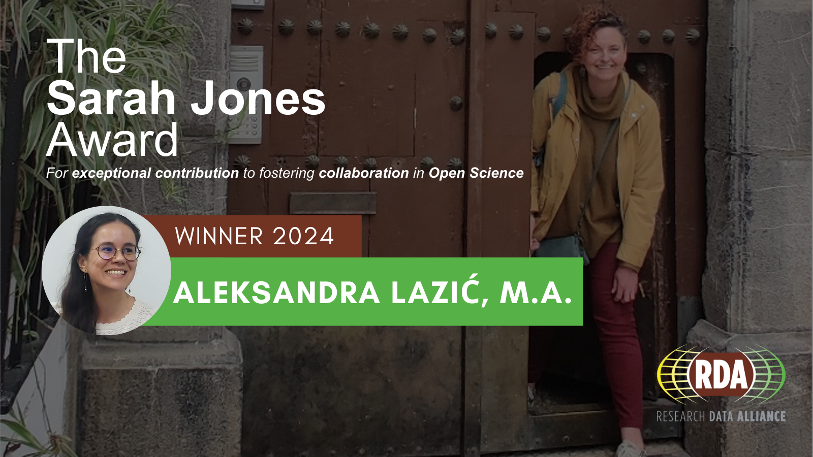

Čestitamo Aleksandri Lazić – našoj koordinatorki u Zajednici otvorene nauke Srbije – prvoj dobitnici novoustanovljene nagrade za izuzetan doprinos negovanju saradnje u otvorenoj nauci (Sarah Jones Award for Exceptional Contribution to fostering collaboration in Open Science). Nagradu izdaje organizacija Research Data Alliance (RDA) u sećanje na Saru Džouns i njen neprocenjiv doprinos globalnoj zajednici okupljenoj oko otvorene nauke.

Aleksandra je proglašena kao pobednica 14. novembra 2024, tokom ceremonije zatvaranja 23. konferencije RDA Plenary u Kostariki. Nagrada prepoznaje pozitivan uticaj Aleksandrinog rada na REPOPSI-ju – repozitorijumu za otvorene psihološke instrumente na srpskom. Aleksandra je bila jedna od osnivačica REPOPSI-ja pri LIRA Labu i rukovodila je projektom unapređenja Repozitorijuma, koji su finansirali EOSC Future i RDA.
Komisija za dodelu Nagrade je istakla i Aleksandrinu predanost promovisanju praksi otvorene nauke, njeno razumevanje složenosti izgradnje repozitorijuma, njenu posvećenost RDA zajednici i njeno zagovaranje za međunarodnu saradnju. Pri primanju nagrade, Aleksandra je u svom govoru istakla da će joj Nagrada pomoći da poveća vidljivost zajednica čiji je deo, uključujući Zajednicu otvorene nauke Srbije i ABRIR.